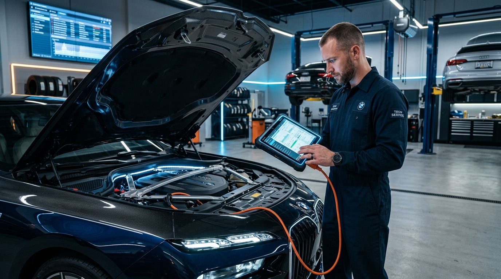

GEARBOX SERVICES &
TOTAL TRANSMISSION SOLUTIONS.
Dealership-grade gearbox reconditioning, DSG dual-clutch repairs & free UK recovery with our comprehensive 12-month / 12,000-mile warranty.

GEARBOX REPLACEMENT
When an internal transmission failure causes severe mechanical damage, we supply and install reconditioned transmissions verified through dedicated quality testing.
- ✓ Smoother gear transitions & response
- ✓ Restored optimal fuel economy
- ✓ Brand new / OEM grade certified components
- ✓ Comprehensive parts & labour warranty

GEARBOX & CLUTCH REPAIR
A slipping clutch, damaged dual-mass flywheel, or worn synchromesh causes difficult shifting. Expert component-level repair eliminates issues without replacing the entire gearbox assembly.
- ✓ Dual-mass flywheel & friction plate repair
- ✓ Synchromesh & gear tooth refurbishment
- ✓ Bearing, seal & selector fork replacement
- ✓ Mechatronics solenoid & valve body overhaul

GEARBOX RECONDITIONING
Complete mechanical remanufacturing restoring your existing transmission to factory condition. You gain the durability and performance of a new gearbox at up to 60% lower cost.
- ✓ Full ultrasonic teardown & component cleaning
- ✓ High-wear parts replaced with OEM bearings/seals
- ✓ Calibrated to original factory tolerances
- ✓ Backed by comprehensive warranty
Specialist Expertise Across Every Transmission System
Whether your vehicle is equipped with a complex dual-clutch DSG, high-torque ZF automatic, or commercial fleet manual, repairs are completed through our specialist transmission engineering partner facility equipped with dedicated diagnostic tooling and calibration rigs.
Gearbox Repair
Targeted component diagnosis and repair for manual, automatic, and dual-clutch transmissions across all vehicle makes.
Explore Gearbox Repair →DSG Dual-Clutch Repair
Direct-Shift Gearbox rebuilds for VW, Audi, Seat, Skoda (DQ200, DQ250, DQ381, DQ500, DL501). Solenoid, clutch, and hydraulic repairs.
Explore DSG Gearbox Repair →Automatic Gearbox Repair
Full overhauls for ZF 6HP/8HP/9HP, Mercedes 7G/9G-Tronic, Aisin, and GM automatics. Torque converter and valve body overhauls.
Explore Automatic Repair →Manual & Commercial Repair
5-speed and 6-speed manual overhauls for passenger cars and trade vans. Bearing renewals, synchromesh fixes, and shaft rebuilding.
Explore Manual Gearbox Repair →Gearbox Reconditioning
Complete remanufacturing of heavily worn units, rebuilt with OEM-grade bearings and seals to factory tolerances.
Explore Reconditioning →Gearbox Replacement
Complete replacement transmission supply and installation when repair or rebuild is not economically viable.
Explore Gearbox Replacement →Mechatronic Unit Repair
Testing and repair of dual-clutch mechatronic control units, TCU circuit boards, pressure sensors, and solenoids.
Explore Mechatronic Repair →Torque Converter Repair
Rebuilding and replacement of automatic torque converters to eliminate shuddering, slipping, and cabin vibration.
Explore Torque Converter Repair →Valve Body Repair
Overhaul of hydraulic valve bodies, precision solenoid replacement, and hydro-channel re-sleeving for smooth shifting.
Explore Valve Body Repair →Clutch & Flywheel Replacement
Diagnostic advice and replacement of worn clutches, dual-mass flywheels (DMF), and hydraulic slave cylinders.
Explore Clutch & Flywheel →Gearbox Servicing & Fluid Renewal
Preventative transmission fluid flush, filter replacement, and pan cleaning using exact OEM-grade fluids.
Explore Gearbox Servicing →Ford Powershift Repair
Dedicated rebuilds for Ford 6DCT250 and 6DCT450 transmissions addressing clutch damper spring failure and shudder.
Explore Powershift Repair →CVT Transmission Repair
Specialised Continuously Variable Transmission repairs for Nissan, Audi Multitronic, Honda, and Toyota systems.
Explore CVT Repair →4WD Transfer Box Repair
Overhauls for BMW xDrive transfer cases, Haldex pumps, and Land Rover / Audi Quattro center differentials.
Explore Transfer Box Repair →Gearbox Diagnostics
Specialist electronic scanning, live hydraulic pressure telemetry, and road test assessment to find root fault causes.
Explore Gearbox Diagnostics →Main Dealer vs Gearbox Giants
Franchised main dealerships typically quote for complete new crate transmission replacements with extended factory lead times. We precision-recondition your existing transmission with OEM components, offering up to 60% savings with full warranty coverage.
SIGNS YOUR GEARBOX NEEDS IMMEDIATE ATTENTION
If you experience any of these symptoms contact us as soon as possible, as continued driving can cause irreversible transmission damage.